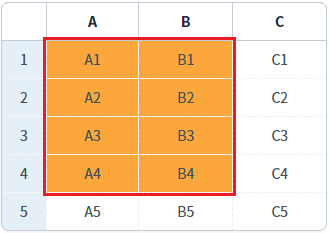
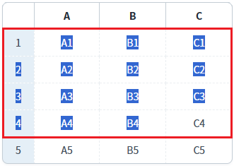
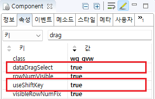

GridView의 'dataDragSelect' 속성과 'useShiftKey' 속성을 사용하여, GridView에서 마우스를 드래그하여 셀의 범위를 선택할 수 있도록 설정한 예제입니다.
Drag를 통해 GridView 셀의 범위 선택 허용
(기본 설정) Drag를 통해 GridView 셀의 범위 선택 불가
예제 영역 '마우스로 드래그하여 범위 선택 가능'의 GridView에서 테스트합니다.1
GridView의 셀에서 드래그하여 실행 결과를 확인합니다.
마우스로 'A1' 셀에서 드래그하여 'B4' 셀에서 드롭합니다.
'A1', 'B1','A2', 'B2','A3', 'B3','A4', 'B4' 셀이 선택되며 셀의 배경색이 변경됩니다.
Image 1.브라우저(Chrome) 실행 예시

예제 영역 '(기본 설정) 마우스로 드래그하여 범위 선택 불가'의 GridView에서 테스트합니다.1
GridView의 셀에서 드래그하여 실행 결과를 확인합니다.
마우스로 'A1' 셀에서 드래그하여 'B4' 셀에서 드롭합니다.
셀의 문자열이 선택됩니다.
Image 2.브라우저(Chrome) 실행 예시

GridView와 연결된 DataList 생성 및 연결 방법은 생략되었습니다.
GridView의 속성을 정의합니다.
[필수] dataDragSelect="true"
default:false, true] 여러 개의 셀들을 드래깅으로 선택. useShiftKey 속성을 사용할 때 유효하며, dataDragDrop 속성과 함께 사용할 수 없음.
[필수] useShiftKey="true"
shift key를 사용하여 복수 셀의 선택에 대한 적용 여부.
Image 3.웹스퀘어 스튜디오의 Component View - 속성 설정 예시

Example 1.Source
<!-- gridView 의 소스 본문 예시 --> <w2:gridView dataDragSelect="true" useShiftKey="true"> <!-- 중략 --> </w2:gridView>
dataDragSelect
useShiftKey